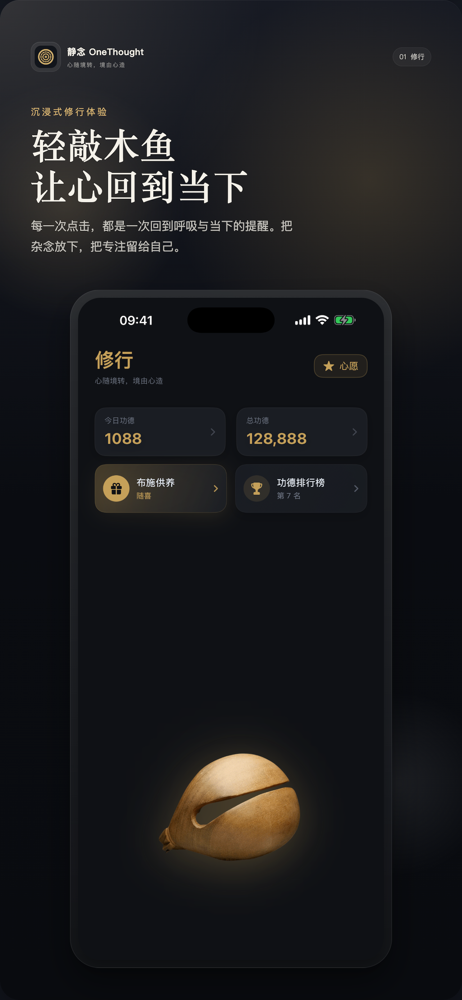
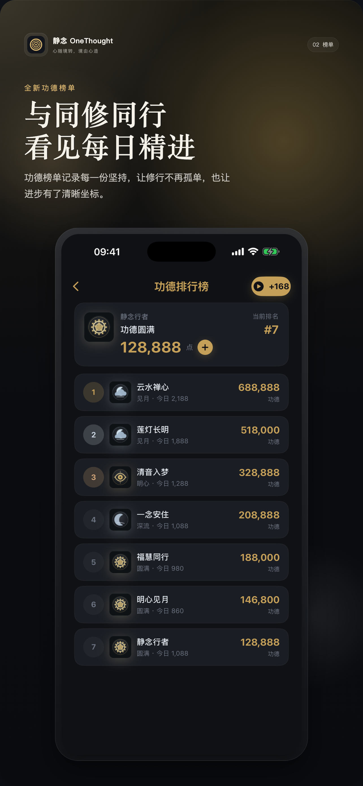
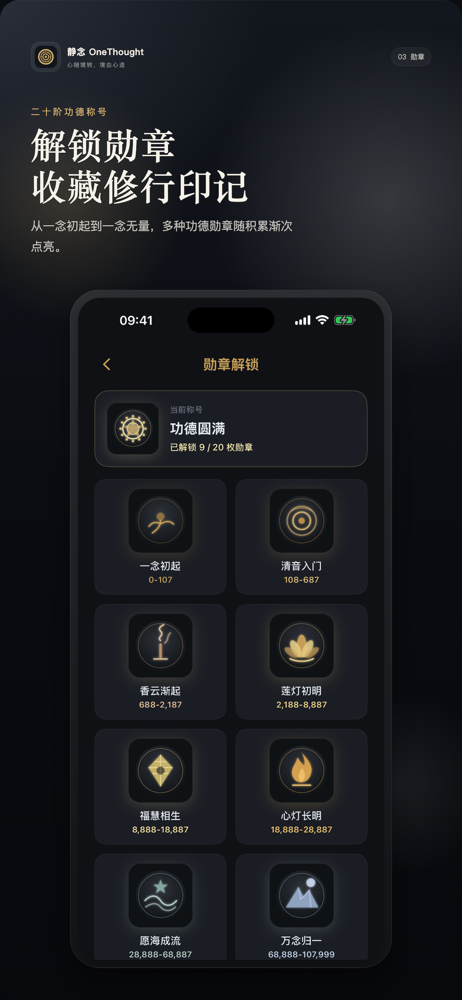
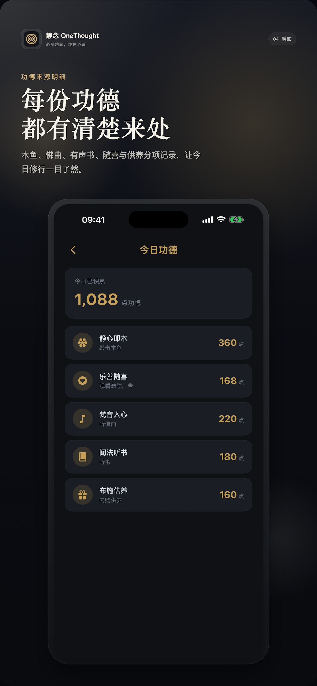

轻触、摇动或通过 Apple Watch 敲击，配合声音、触觉和流畅动效，让注意力回到当下。
把片刻留给自己
记录每日功德、历史来源和称号进阶，把积累投入自己的心愿，见证微小但持续的变化。
在佛乐、有声内容和阅读之间切换，收藏喜欢的内容，形成属于自己的安静角落。
App Preview
静心，也可以很简单




Privacy by clarity
你的心愿，默认留在设备里
本地内容与在线服务边界清晰说明。排行榜、分析、广告和在线音频涉及的网络处理，可在隐私政策中完整查看。